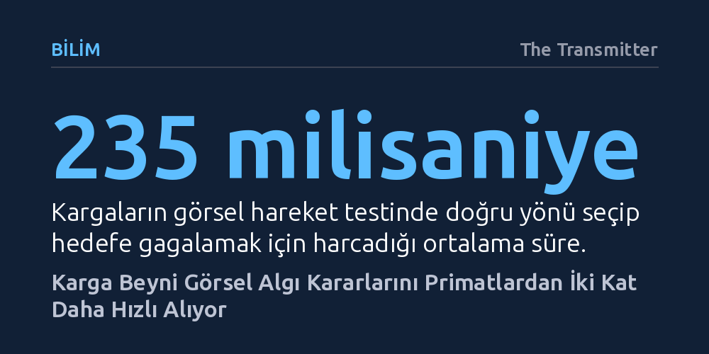

BILIM · The Transmitter · 2026-10-23
Yeni bir araştırma, kargaların görsel algıya dayalı karar alma görevlerini primatlardan ve insanlardan iki kat daha hızlı tamamladığını ortaya koydu. Kuşların memelilerden tamamen farklı beyin yapısına rağmen aynı bilişsel süreci 235 milisaniyede ve yüzde 74 doğrulukla gerçekleştirdiği saptandı.
Yüksek hızda ve doğru karar verme yetisinin yalnızca memelilere özgü katmanlı neokortekse bağlı olmadığını, evrimin bambaşka bir beyin mimarisiyle de üstün bilişsel performansa ulaşabildiğini gösteriyor.

İnsanlar ve diğer primatlar, uzun süredir karmaşık görsel verileri işleme ve bunlara hızla tepki verme becerisinin zirvesi olarak kabul ediliyordu. Ancak saygın bilim dergisi Science'ta yayımlanan yeni bir nörobiyoloji araştırması bu yerleşik algıyı değiştirdi. Laboratuvar deneyleri, kargaların görsel uyaranları değerlendirip eyleme dökme hızının, insanlar dahil tüm primatlardan yaklaşık iki kat daha yüksek olduğunu kanıtladı.
Kargagiller familyası; alet kullanma, geometrik şekilleri ayırt etme ve sayı sayabilme gibi üstün bilişsel hünerleriyle bilim dünyasını zaten sıkça şaşırtıyordu. Yeni bulgular ise bu zekânın sadece karmaşık problem çözmeyle sınırlı olmadığını, bilginin sinirsel işlenme hızında da benzersiz bir çevikliğe dayandığını ortaya koydu. Araştırmanın yürütücüsü fizyolog Andreas Nieder, elde edilen sonuçları "Kuşların beyni de adeta hızlı şeritte seyrediyor," diyerek özetliyor.
Araştırmacılar, primat çalışmalarında otuz yıldır altın standart olarak kullanılan klasik bir algısal karar testini kargalara uyarladı. Iggy ve Lemmy adlı iki leş kargasına, bilgisayar ekranında farklı yönlere hareket eden beyaz noktalardan oluşan bir bulut gösterildi. Noktaların bir kısmı uyumlu biçimde sağa ya da sola kayarken, diğerleri rastgele yönlerde savruluyordu. Kuşların görevi, ortak hareket eden noktaların yönünü tespit edip un kurdu ödülünü almak için ekranın o tarafını gagalamaktı.
Binlerce deneme sonucunda kargaların doğru tarafa gagalama süresi ortalama 235 milisaniye olarak ölçüldü. Bu süre, aynı testten geçen primatların harcadığı vaktin neredeyse yarısına denk geliyor. Üstelik bu muazzam hız bir acelecilikten veya dikkatsizlikten kaynaklanmıyordu; kargalar hızlarına rağmen yüzde 74 gibi primatlarla eşdeğer düzeyde yüksek bir isabet oranı yakaladı. İki kuş arasındaki performans tutarlılığı, bu hızın bireysel bir yetenekten ziyade biyolojik bir kapasiteyi yansıttığını gösteriyor.
Elde edilen sonuçları asıl çarpıcı kılan unsur, kuşlar ile memelilerin beyin anatomisi arasındaki derin uçurum. Kuşlar ile memelilerin evrimsel yolları 300 milyon yıldan daha uzun bir süre önce ayrıldı. Memelilerde karar alma süreçleri altı katmanlı neokorteks tabakasında yürütülürken, kuşlarda bu katmanlı yapı bulunmuyor. Kuşlar, nöronların yoğun çekirdekler halinde kümelendiği nükleer pallium yapısıyla düşünüyor ve hareket ediyor.
Araştırma ekibi, karga beyninde primatların prefrontal korteksine denk gelen nidopallium caudolaterale bölgesindeki yüzlerce nöronun etkinliğini kaydetti. Analizler, görsel uyaranın belirmesinden sadece 70 milisaniye sonra bu bölgedeki nöron hareketliliğinin karganın nereye gagalayacağını kesin olarak belirlediğini gösterdi. Karar mekanizması, primatlara kıyasla çok daha kısa sürede şekilleniyor ve doğrudan eyleme aktarılıyordu.
Bu yüksek işlem hızının niteliğini doğru anlamak büyük önem taşıyor. Araştırmacılar, kargaların sergilediği bu performansın derinlemesine düşünmeye veya değer tartımına dayalı ekonomik bir karar süreci olmadığını özellikle belirtiyor. Buradaki hüner, doğada anlık yırtıcı tehditlerinden kaçmak veya av yakalamak için gereken yıldırım hızındaki algısal tercihlerden ibaret.
Yine de elde edilen sonuçlar, karşılaştırmalı evrimsel biyoloji açısından ufuk açıcı bir ders sunuyor. Üstün bilişsel hız ve etkili karar mekanizmalarının oluşması için memeli tarzı katmanlı bir neokortekse sahip olmak tek zorunlu yol değil. Evrim, birbirinden tamamen bağımsız iki mimari üzerinden aynı bilişsel gereksinimi karşılayabilecek farklı ve eşit derecede başarılı beyin sistemleri inşa edebiliyor.